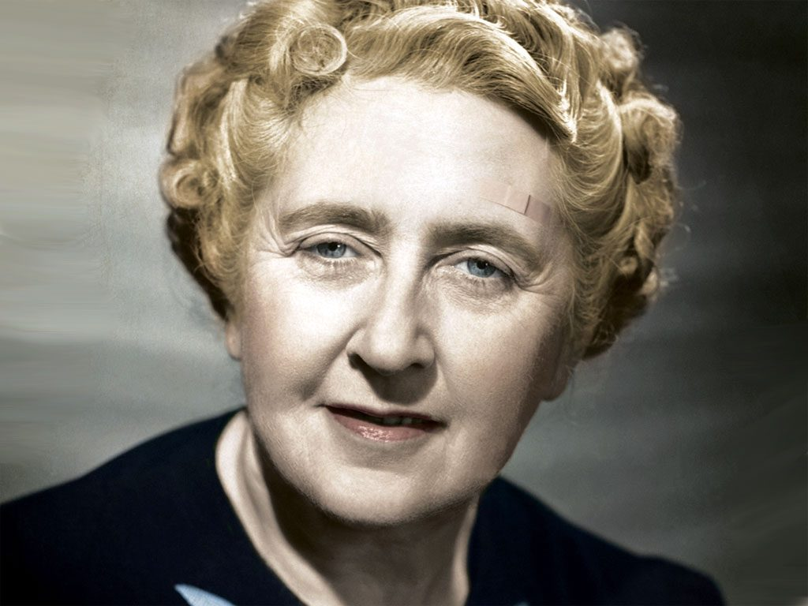

En un ordre alfabètic convencional a continuació relacionem els principals personatges que intervenen en aquesta obra
Dama de companyia de Fenella Gruteman.
Tiet de Fenella Guteman.
Esposa de Micheal Rogers.
Germanastra de l'aquitecte Santonix.
Gitana de MArket Chadwell.
